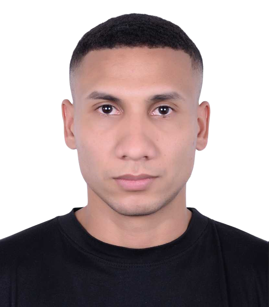
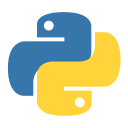
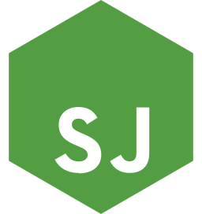

▰01 / LETTERBUCKETCaso real
⚡
stripe.connect
billing / webhooks
billing / webhooks
Monetización SaaS
Stripe Connect, pagos multimoneda, paywall, autenticación OTP y magic links.
Stripe ConnectWebhooksOTP
No soy un endpoint. Pero siempre respondo tus solicitudes.
Construyo APIs, microservicios, integraciones con IA y agentes que funcionan más allá del entorno de desarrollo. Python, Node.js, infraestructura cloud y una sana obsesión por la calidad.



Soy Edwar Cedeño, desarrollador Full Stack con enfoque en backend y más de 7 años construyendo productos reales.
He trabajado en fintech, trading, plataformas SaaS e integraciones. Me gusta entender el sistema completo, detectar problemas antes de que escalen y construir soluciones que el equipo pueda mantener.
↓ Descargar currículumedwar@portfolio:~$ cat identity.json
{ "name": "Edwar Cedeño", "focus": "Backend engineering", "experience": "7+ years", "domains": [ "Fintech", "SaaS", "AI integrations" ], "status": "open to opportunities" }
edwar@portfolio:~$ ▌
$ ls -la selected-work/
Casos reales de mi experiencia profesional, no repositorios inventados.
Stripe Connect, pagos multimoneda, paywall, autenticación OTP y magic links.
Microservicios Python, APIs REST, Docker, CI/CD y observabilidad con Grafana.
Integración de APIs, extracción de datos automatizada y aplicaciones web modulares.
Algunos trabajos son propietarios; se muestran responsabilidades y tecnologías documentadas en mi experiencia.
$ tree -L 2 ./skills
Lo que utilizo para desarrollar, desplegar y mantener software.
$ cat engineering-philosophy.md
Un backend confiable no empieza en el deploy, sino en las decisiones que tomas antes.
Revisión de código, validación de entradas, flujos de autenticación, monitoreo y análisis de errores forman parte de cómo abordo el desarrollo. Me interesa especialmente la lógica de negocio y la seguridad de las APIs.
edwar@portfolio:~$ ./review.sh
[CHECK] Input validation
[PASS] Request contracts reviewed
[CHECK] Authentication flows
[PASS] Edge cases identified
[CHECK] Monitoring & alerts
[INFO] Observability matters
edwar@portfolio:~$ ▌
Demostración visual, no representa una auditoría real ni un escaneo de este sitio.
$ cat /var/log/career.log
Equipos, responsabilidades y sistemas reales.
Diseño e implementación de monetización con Stripe Connect, Billing Portal, webhooks, paywall y autenticación de suscriptores. Resolución de incidencias críticas en producción.
Liderazgo de un equipo de 5 a 10 desarrolladores. Desarrollo de microservicios y APIs Python; automatización de CI/CD con Bitbucket y monitoreo con Grafana.
Aplicaciones con Vue.js, React y Laravel; automatización de extracción de datos en Python, integración de APIs y pruebas unitarias/E2E con unittest y Selenium.
$ ./contact.sh
Disponible para conversar sobre desarrollo backend, arquitectura, integraciones y oportunidades de trabajo.